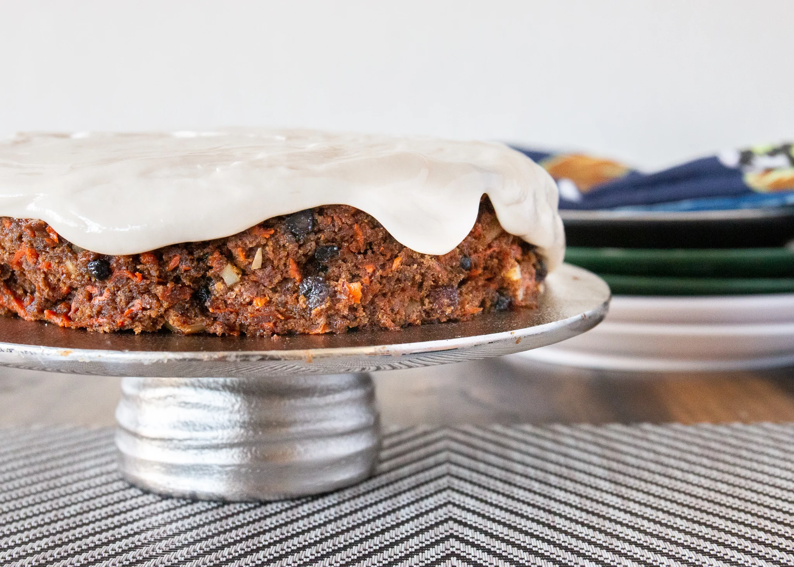

Vegan Carrot Cake

Cruelty-free flavour-full carrot-based dessert.
Ingredients:
- 2 cups whole wheat flour
- ¼ cup soy flour (Optional)
- 1½ tablespoons ground cinnamon
- 1 tablespoon ground cloves
- 4 teaspoons baking soda
- 2 teaspoons tapioca starch (Optional)
- ½ teaspoon salt
- 1½ cups hot water
- ¼ cup flax seed meal
- 2 cups packed brown sugar
- 4 teaspoons vanilla extract
- ¾ cup dried currants (Optional)
- 6 carrots, grated
- ½ cup blanched slivered almonds (Optional)
Instructions:
- Preheat oven to 350 degrees F (175 degrees C). Prepare a 9x13 inch baking pan with cooking spray. Whisk together the whole wheat flour, soy flour, cinnamon, ground cloves, baking soda, tapioca starch, and salt in a bowl until blended; set aside.
- Pour the hot water into a mixing bowl, and sprinkle with the flax meal. Stir for a minute until the flax begins to absorb the water, and the mixture slightly thickens. Stir in the brown sugar and vanilla until the sugar has dissolved, then add the currants, carrots, and almonds. Stir in the dry mixture until just moistened, then pour into the prepared pan.
- Bake in the preheated oven until a toothpick inserted into the center comes out clean, about 30 minutes. Cool in the pan for 10 minutes before removing to cool completely on a wire rack.